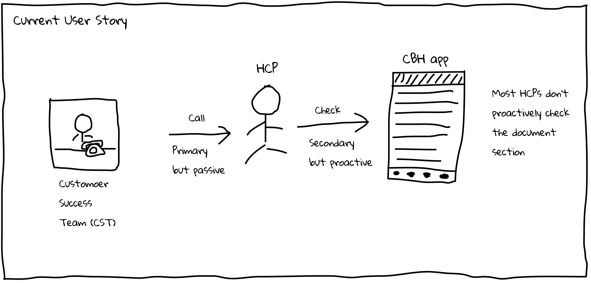
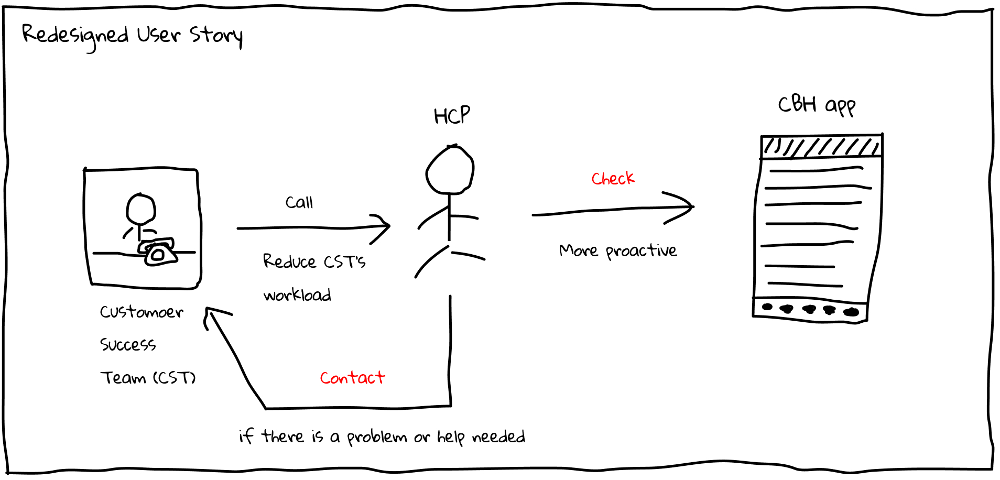

Clipboard Health (CBH) App Redesign
Project: CBH redesign for document collection section
Role: UX Designer
Deliverables: User Story, Sketch, Hi-fi Wireframe,
Interactive Prototype
Tools: Figma, Google Doc
Target User: Healthcare Professional (HCP)
Time: 2 hour exercise
CBH Overview
CBH is a marketplace that’s an Uber for healthcare professionals (HCPs) where healthcare facilities (HCFs) can request an HCP on demand or when they have a need, and where the HCP can pick and choose the shifts they want to work, based on location, schedule and pay. Shifts are typically 8 hours long, and can take place in the morning, afternoon or overnight.
CBH app allows HCPs to check what shifts are available via a calendar view, and then pick and choose the shifts they want to work. Before they can book a shift, however, they have to submit a set of documents to CBH app (such as their physical, their TB test, etc.). Right now, HCPs submit ~10 documents to onboard and begin working with CBH. These documents are the minimum required docs to work any shift. However, many of the HCFs (facilities) require additional documentation in order to pick up their shifts.
Project Brief
This project is aiming to redesign the process for healthcare professionals (HCPs) to submit the required document to CBH app and find out the best solution to help HCP achieve the goal of picking up shift that they want in an easy way. The redesign would address the following questions:
1. What documents do HCPs need to upload to work at CBH?
2. How do HCPs upload documents? Upload vs Reupload
3. What’s the status of docs?
4. Are any of the docs expiring? Do they need to upload new ones?
5. What do HCPs get if they upload some of the recommended / facility required docs?
Problem
Most of the HCPs do not proactively check the document section in the app and keep their docs up-to-date. Currently HCPs reply on the phone calls from the Customer Success Team, which is costly and not convenient.
Solution
Change the existing user flow and interface. In the current design, the document section is under the Account tab which is not standing out to attract the HCP’s attention. Since submitting the required document is an important step for HCP to fill a shift, it should be given more priority. Thus I decided to move this part and list it out separately as an independent app tab.
Assumptions
1, HCP prefers to check on the app instead of receiving the incoming calls from the Customer Success Team
2, HCP would like to preview or view the uploaded docs to make sure the doc is uploaded successfully
3, HCP would like to have more control over the document submission, like preview, delete or reupload docs
4, HCP wants to contact the Customer Success Team when they run into a problem
Current Design and Flow
Currently HCPs learn about which documents they need to upload when the customer success team calls them to fill a shift or the documents team reaches out to let them know that some of their docs are expired/expiring. there is a section in the app where they can view their docs and upload new ones. Most of the HCPs do not proactively check this section and keep their docs up-to-date but the stakeholder wants to change this behavior.
HCPs can click into their Account -> Documents -> View Doc Requirements -> “View” Docs

Current user story:
Due to the limitation of this project, I don't have resources to conduct the user research. Instead, I reviewed the user reviews from AppStore and talked to stakeholder regarding the user feedback. Based on the information, I was able to sketch out the user story as follows:
Sketch
Then I sketched out the interface as follows.
Redesigned Interface
1) Document Tab
Changes made:
1, The document section is listed out separately as a tab, thus it will be easier to attract HCP’s attention. At the same time, if there is action or attention needed, it will appear a red spot on the icon to remind users.
2, ‘Core’ and ‘Recommended’ is changed to ‘Basic’ and ‘Additional’ to make it easier to understand terms.
3, Number of docs section is removed. The red dot number besides ‘Additional’ or ‘Core’ will only show the number of docs which needed action.
4, Different colors represent different status of the docs.
Red: expire; Orange: Empty, need uploading new doc; Green: completed
5, Customer Success Team contact icon is added if users have any confusion/question about this section.
2) New Document Upload Page
Changes made:
1, Combine the upload options (take photo & select document) into one button, and when clicked, two options will show as overlays. This change will make the page clean and well organized.
2, Remove the Description and Instructions part.
3, Add Document Type.
4, Add the preview section in the most important place of the page - users can also click the preview section to upload new docs if no doc was uploaded before.
5, When uploaded successfully, users will be notified in the top banner.
6, Customer Success Team contact icon is added.
3) Expired Document
Changes made:
The preview section will become red to remind users that the doc has expired.
Prototype
Click here to check prototype
Future Improvement
Since this is just a 2-hour redesign exercise, there is still much work that could be done if given more time and resources. Here are some future improvements to consider:
1, Conduct Usability Testing on the prototype
2, Conduct User Research, including surveys and interviews to know more about how HCP behaves
3, Take more constraints into the consideration